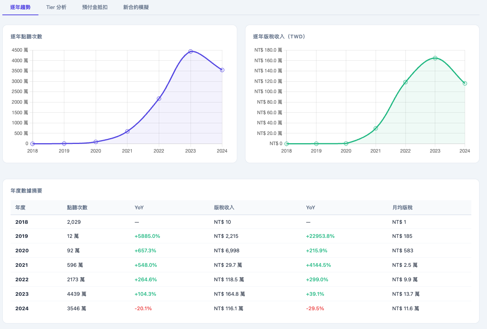
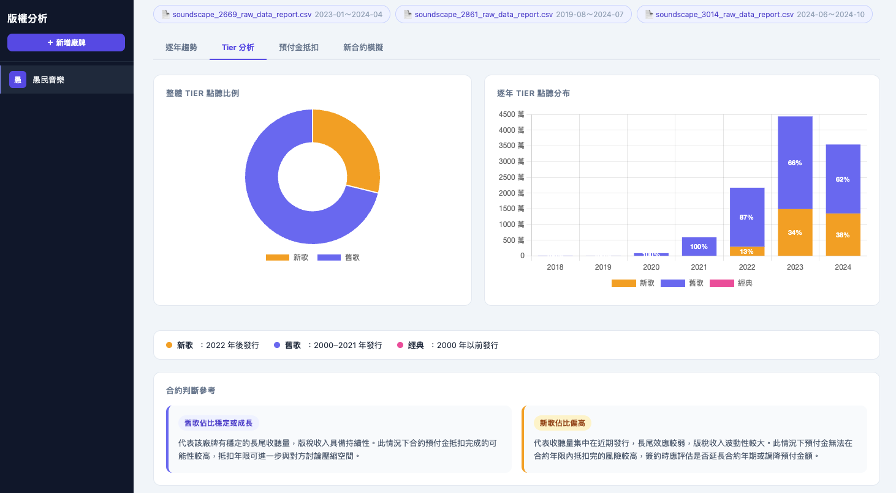
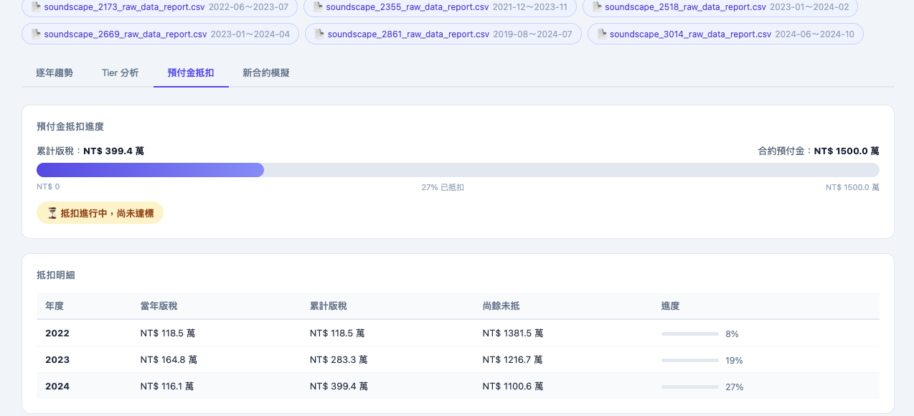
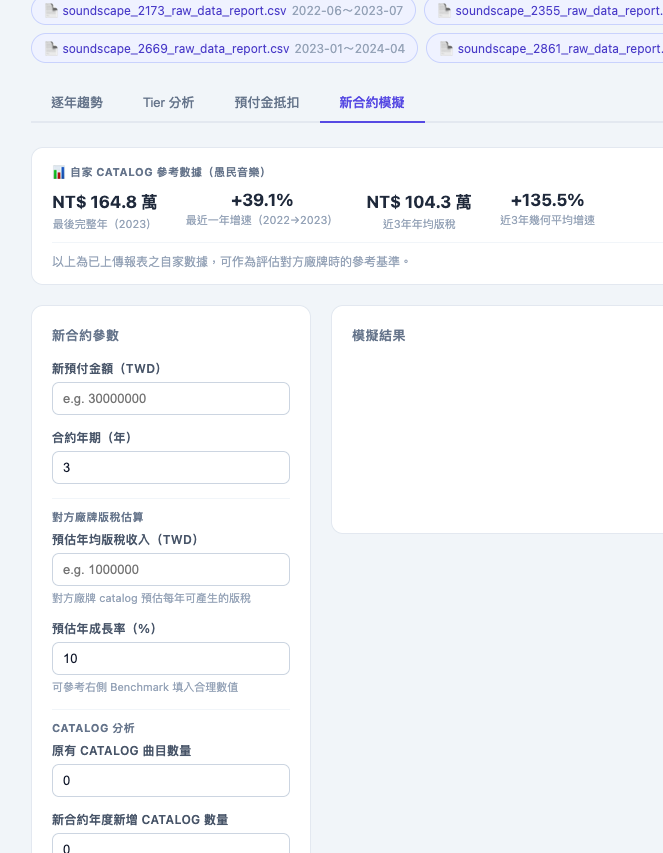

工具 / 資料分析
使用情境
版權經理在與廠牌洽談合約前，需要一份快速可用的分析依據：這個廠牌的收聽量成長了嗎？版稅有沒有實際累積？預付金已抵扣多少？若要重新報價，合理的區間是什麼？這個工具讓這些問題可以在一個畫面內快速回答。
功能架構
Module 01
上傳多份 CSV 報表後，自動彙整逐年點聽次數與版稅收入走勢，搭配 YoY 增減幅度，快速掌握廠牌的內容成長軌跡。
Module 02
依發行年份將曲目分為新歌（2022 後）、舊歌（2000–2021）、經典（2000 前），分析各層版稅佔比與逐年分布，輔助評估長尾效應與合約風險。
Module 03
輸入合約預付金金額，自動計算歷年版稅累積抵扣進度，顯示目前抵扣比例與尚餘未抵金額，作為續約判斷的關鍵依據之一。
Module 04
輸入對方廠牌的預估年均版稅與成長率，以自家數據作為 benchmark，模擬不同預付金與合約年期下的抵扣可行性，快速收斂報價區間。
介面展示



